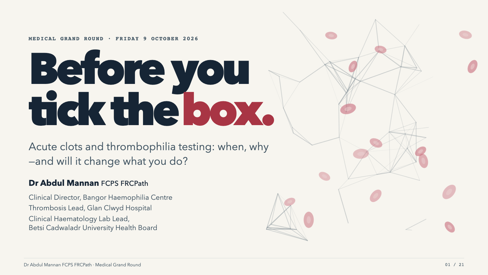

Medical grand round · 15 minutes
A swollen left leg.
Before you tick the box.
Acute clots and thrombophilia testing: when, why—and will it change what you do?
One self-contained HTML file. Animations and sound effects included. No internet needed after download.

Present at the hospital
- Choose Download HTML and save the file.
- Open the saved file in Edge or Chrome.
- Press F for fullscreen and use the arrow keys to present.
If the browser opens the presentation instead of downloading it, use its Save page option. Keep the PDF as a static backup.
Presentation controls
→ / Space Next reveal
← Previous reveal
S Presenter view · N Notes
M Sound on/off · O Overview
21 main slides plus two references. The clap and glass-shatter cues play during the opening case.